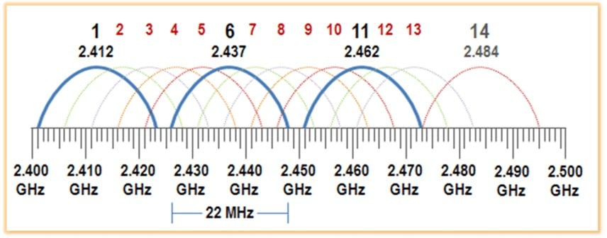

Introducció a les comunicacions sense fil
Totes les pràctiques d'este curs es realitzaran baix:
- ⚖️ Un marc legal i ètic
- 🔒 Entorn aïllat
- 🧪 Controlat
- 📜 Amb permís
- 🎓 Fins educatius / professionals
Tecnologia sense fil (Wireless)
La tecnologia sense fil permet la comunicació entre dispositius sense cables, usant ones electromagnètiques (com a radiofreqüència) per a transmetre dades, oferint mobilitat, flexibilitat i comoditat en llars, empreses i telecomunicacions mitjançant protocols com a Wi-Fi, WiMAX, NFC, Bluetooth, Zigbee, LTE/5g, GPS, IR, entre altres.
S'usa una banda de radiofreqüència per a enviar i rebre informació entre un emissor i un receptor. Els dispositius es connecten a una xarxa a través d'un punt d'accés (com un encaminador/router) que emet senyals.
WiFi
Wifi és una tecnologia de xarxa sense fil que utilitza ones de ràdio per a proporcionar connexió de xarxa d'alta velocitat i accés a Internet sense necessitat de connexions físiques per cable.
Entre els avantatges es pot citar la facilitat d'instal·lació, la seua senzillesa i el seu menor cost, i entre els desavantatges, un rendiment menor que les xarxes cablejades i una seguretat menor en tant que no és necessari l'accés físic per a interceptar informació.
- Es poden classificar segons la cobertura en:
- WPAN : Wireless Personal Area Network..NFC, Bluetooth, ZigBee, IR
- WLAN : Wireless Local Area Network..WiFi
- WMAN : Metropolitan.. Per exemple WiMAX
- WWAN : Wireless Wide Area Network.. 3G, 4G, 5G, Starlink, GPS, ..
Altre concepte que cal recordar. La capa d'enllaç de dades es divideix en dos subcapes
- LLC: Link Layer Control. Oferix interficie amb les capes superiors
- MAC: Media Acces Control. Implementada en Hardware i adaptada a les distintes tecnologies de xarxa i mitjans físics Ethernet (802.3), Sense fil(wifi-802.11), etc...
Estandars 802.11 (WiFi)
802.11 és un grup de treball del IEEE encarregat de definir Estandars sobre xarxes locals sense fil. Des de 1997 han anat publicant distintes versions...
- 1999: 802.11a i 802.11b, utilitza bandes (a)5GHz i (b)2,4GHz , amb velocitats de 54 i 11 Mbps respectivament
- 2003: 802.11g, utilitza 2,4GHz a 54Mbps
- 2009: 802.11n, conegut com WiFi4, per la Wi-Fi Alliance, amb velocitat teorica de 600 Mbps Combina tècniques noves com MIMO (dos antenes, 2 canals a la vegada) i unió de canals en uno.
- 2013: WiFi5 o 802.11ac. Utilitza banda de 5 GHz, amb velocitat teorica de 7 Gbps
- 2021: WiFi6 o 802.11ax. Velocitat teorica de 10 Gbps. Pot utilitzar la banda de 6 GHz. Gestió de més dispositius connectats al mateix temps
- 2024: WiFi7 o 802.11be. Velocitat teorica de 46 Gbps. Menor latència. Més eficiència en entorns congestionats
La Wi-Fi Alliance és una organització internacional sense ànim de lucre que s’encarrega de garantir que els dispositius Wi-Fi funcionen correctament entre ells, encara que siguen de fabricants diferents. També dona noms comercials als estàndards, com: WiFi5, WiFi6, i certifica dispositius (routers, mòbils, ordinadors, IoT, etc.) perquè compleixin aquests estàndards. Quan veus el logotip “Wi-Fi CERTIFIED” en un producte, vol dir que ha passat proves oficials de la Wi-Fi Alliance.
Bandes de freqüència
WiFi pot funcionar en dos bandes, la 2,4 i la 5 GHz. Les bandes son rangs de freqüències que es divideixen en canals d'una certa amplada, a travès de la qual es transmet.
2,4GHz

És un rang de freqüències que va des de 2400 MHz a 2483 MHz. Este espai es divideix en tretze canals de 22 MHz d'amplada cadascu (20 per dades i 2 per evitar solapaments entre canals separats (1,6,11)) i més tard es va afegir el canal 14
WiFi Analyzer és una aplicació per mostrar l'ocupació de la banda
- Avantatges
- Extensa cobertura
- Bona capacitat de penetració d'obstacles
- Alta compatibiitat
- Desavantatges
- Menys velocitat que 5 GHz
- Sol estar prou saturada
5 GHz
Es troba entre 5180 MHz i 5825 MHz. Segons el ample de canal, s'obtenen més o menys canals. L'amplada de canal possibles són 20, 40, 80 i 160 MHz
Avantatges: major velocitat i més canals per utilitzar
Desavantatges: Cobertura menor i poder de penetració més baix que 2,4
En esta banda, alguns canals tenen restricions d'ús. En europa hi ha canals reservats per radars, defensa o meteorologia (DFS) , o canals amb restricció de potencia (TPC)

Protocols de seguretat
Un dels principals punts al moment d'implantar xarxes sense fil és la seguretat, donat que el mitjà de transmisió, al ser l'aire, es compartit (inevitablement). Per tant, es necessari dotar de mecanismes que garanteixen la autenticitat, la integritat, i sobre tot, la confidencialitat.
WEP
Wired Equivalent Privacy. És el primer protocol de seguretat per a WLAN. Oferix dos tipos d'autenticació.
- Open
- SKA : Shared Key Authentication
- OPEN
- No comprova la clau WEP durant l’autenticació
- Qualsevol dispositiu pot autenticar-se amb el punt d’accés
- La clau WEP només s’usa després, per xifrar les dades
- Si el client no té la clau correcta, no podrà comunicar-se després
- SKA
- Utilitza la clau WEP durant l’autenticació
- Es fa un repte-resposta (challenge–response)
- Si no es coneix la clau, no es pot connectar(associar) al AP
⚠️ En 2004, va ser retirat per la WiFi Alliance, i va ser declarat "obsolet"
WPA i WPA2
WPA (Wifi Protected Access)
- Oferix dos models d'autenticació
- WPA Personal: amb PSK (Pre Shared Key)
- WPA Enterprise: Utilitza 802.1X, que fa servir un servidor d’autenticació, normalment RADIUS
En 2004, es publica WPA2, requisit de la WiFi Alliance, millorant algorismes de xifrat del protocol. Substitueix TKIP per AES (CCMP) → més seguretat
WPA3
Apareix en 2018 com a millora del WPA2, encara que hui en dia no està molt estés.
- Millores de WPA3
- Autenticació més segura. Substitueix el PSK de WPA2. Utilitza SAE (Simultaneous Authentication of Equals) Evita atacs de diccionari offline. Cada intent d’autenticació és independent
- Xifrat individual per dispositiu. Evita que un usuari pugui espiar un altre
- Forward Secrecy. Si es compromet la contrasenya: no es poden desxifrar comunicacions antigues
- Xifrat més fort obligatori. WPA3 obliga a: AES amb claus més llargues
- Millores per a xarxes obertes (OWE).Opportunistic Wireless Encryption
- Enterprise més robust. WPA3 Enterprise: mínim 192 bits de seguretat
Atacs a WiFi
L'auditoria de xarxes sense fil es una part important de la labor del pentesting. Estes comunicacions poden ser interceptades per qualsevol que estiga dins del rang de la senyal de radio, i per aixó, la seua correcta protecció és de vital importància.
Metodologia OWISAM per auditoria de xarxes sense fil
OWISAM (Open Wireless Security Assessment Methodology) és una metodologia pensada per avaluar la seguretat de xarxes sense fils d’una manera ordenada, professional i repetible. El seu objectiu no és “trencar el Wi-Fi”, sinó mesurar fins a quin punt una xarxa wireless és segura en un entorn real i quin risc representa per a l’organització.
(En un context d'aplicacions web, l'equivalent seria L’OWASP Testing Guide)
No depèn d’una entitat oficial centralitzada com OWASP, però s’associa sovint amb empreses o grups de professionals que la fan servir o promocionen (p. ex., Tarlogic)
La metodologia estableix una serie de riscos de seguretat. Estos riscos es classifiquen en deu categories.
| Codi OWISAM | Descripció |
|---|---|
| OWISAM-TR-001 | Xarxa de comunicacions Wi-Fi oberta. |
| OWISAM-TR-002 | Presència de xifrat WEP en xarxes de comunicacions. |
| OWISAM-TR-003 | Algorisme de generació de claus del dispositiu insegur (contrasenyes i WPS). |
| OWISAM-TR-004 | Clau WEP/WPA/WPA2 basada en diccionari. |
| OWISAM-TR-005 | Mecanismes d’autenticació insegurs (LEAP, PEAP-MD5, etc.). |
| OWISAM-TR-006 | Dispositiu amb suport de Wi-Fi Protected Setup (PIN) actiu (WPS). |
| OWISAM-TR-007 | Xarxa Wi-Fi no autoritzada per l’organització. |
| OWISAM-TR-008 | Portal hotspot insegur. |
| OWISAM-TR-009 | Client intentant connectar-se a una xarxa insegura. |
| OWISAM-TR-010 | Abast de cobertura de la xarxa excessivament ampli. |
La metodologia estableix una serie de controls que es deuen de dur a terme per garantizar el risc de seguretat. Estos controls es classifiquen en deu categories.
| # | Codi | Tipus de control | Descripció dels controls |
|---|---|---|---|
| 1 | OWISAM-DI | Descobriment de dispositius | Recopilació d’informació sobre les xarxes sense fils. |
| 2 | OWISAM-FP | Fingerprinting | Anàlisi de les funcionalitats dels dispositius de comunicacions. |
| 3 | OWISAM-AU | Proves sobre l’autenticació | Anàlisi dels mecanismes d’autenticació. |
| 4 | OWISAM-CP | Xifrat de les comunicacions | Anàlisi dels mecanismes de xifrat de la informació. |
| 5 | OWISAM-CF | Configuració de la plataforma | Verificació de la configuració de les xarxes. |
| 6 | OWISAM-IF | Proves d’infraestructura | Controls de seguretat sobre la infraestructura wireless. |
| 7 | OWISAM-DS | Proves de denegació de servei | Controls orientats a verificar la disponibilitat de l’entorn. |
| 8 | OWISAM-GD | Proves sobre directives i normativa | Anàlisi dels aspectes normatius que s’apliquen a l’ús de les xarxes Wi-Fi. |
| 9 | OWISAM-CT | Proves sobre els clients sense fils | Avaluació de vulnerabilitats que afecten els clients sense fils. |
| 10 | OWISAM-HS | Proves sobre hotspots i portals captius | Debilitats que afecten l’ús de portals captius. |
Per poder realitzar atacs (ètics) a xarxes sense fil és necessari que la tarjeta de xarxa puga pasar a mode monitor per llegir tot el trànsit i injectar paquets. No totes les tarjetes de xarxa permeten això, pel que s'ha de comprovar si la tarjeta té estes capacitats.
Suite aircrack-ng
La suite aircrack-ng consta d'un conjunt de ferramentes per realitzar les auditories de xarxes sense fil. Està disponible tant per a Windows com per a Linux. A més a més, es troba instal·lada a Kali.
- Consta de:
- airmon-ng: Per canviar el mode de treball de la targeta
- airodump-ng: Per escoltar trànsit
- aireplay-ng: Permet realitzar ataca sobre punts d'accés injectant frames
- aircrack-ng: Permet fer atacks de força bruta, diccionari o estadístic sobre captures de trànsit
- airdecap-ng: Permet desxifrar captures de trànsit xifrat amb WEP i WPA sempre que es dispose de la clau
- airbase-ng: Permet atacar a clients i crear punts d'accés falsos
- airdecloack-ng: Elimina paquets de tipus WEP cloacking
- airolib-ng: Permet emmagatzemar llistes de ESSID i claus, calcular PMK i usar-les per crackejar WPA/WPA2
- airserv-ng: Permet crear un servidor wireless per permetre que múltiples aplicacions usen la targeta sense fil
- airtun-ng: Permet crear interficies virtuals anomenades (tunnels) per monitoritzar trànsit xifrat amb propòsit de WIDS (Wireless Intrusion Detection System)
Establir targeta en mode monitor
Totes estes comandes de la suite requeriran privilegis amb sudo o sent root
Primer s'ha de localitzar el nom de la targeta, amb iwconfig, iw, ip,
Si la targeta està connectada per USB, es pot usar la comanda lsusb, lspci, lsblk
airmon-ng start|stop|check interfície [channel or frequency]
Compte, quan es canvia a mode monitor, la interfície canvia de nom !
Descobriment de xarxes sense fil
airodump-ng interfície
L'eixida d'airodump-ng mostra en primer lloc, els punts d'accés (AP).
A continuació, es mostra informació sobre els equips (STATION)
connectats a punts d'accés (BSSID) o que han intentat identificar una xarxa en concret (Probe).
- Dades dels punts d'accés
- BSSID: Adreça MAC del punt d'accés (AP)
- PWR: Potència del senyal
- Beacons : Num de paquets anuncis enviats pel AP
- #Data: Num de paquets capturats (en WEP sols els IV)
- #/s : Num de paquets capturats cada 10 segons
- CH : Canal
- MB : Velocitat
- ENC : Algorisme de xifratge usat pel AP ( OPN, WEP, WPA, WPA2 )
- CIPHER : Tipus de xifratge ( WEP,TKIP(WPA), CCMP(WPA2) )
- AUTH : Mètode d'autenticació (PSK generalment)
- ESSID : Nom de la xarxa sense fil
Una volta identificada la xarxa sobre la qual es desitja fer l'auditoria, es pot fer servir el comando airodump-ng amb l'opció --bssid per indicar la MAC del punt d'accés, o l'opció --channel per indicar el canal que es desitja escoltar. L'opció --write permet especificar el nom del fitxer on s'emmagatzemaran els paquets capturats
airodump-ng --bssid aa:aa:aa:bb:00:01 --channel 1 --write fitxer_captura wlan1
Si no s'indica la extensió del fitxer, es guardaran les captures en els diferents formats possibles (.cap .csv .kismet.csv .kismet.netxml)
Atacs als protocols de seguretat
És importat conéixer les principals investigacions sobre vulnerabilitats en el protocol 802.11 que han permés dissenyar atacs per poder obtindre claus utilitzades en les comunicacions.
- WEP: Korek ChopChop Attack, Fragmentation Attack, PTW Attack
- WPA: Ohigashi-Mori Attack, Michael Attack, Hole196 vulnerability
- WPA2: Krack Attacks, Kr00k
- WPA3: DragonBlood bugs, FragAttaks
Atacs a WEP
Existeixen diverses debilitats en el protocol WEP
La vulnerabilitat del IV (Initialization Vector) en WEP és el motiu principal pel qual aquest protocol es considera trencat i obsolet.
- WEP utilitza l’algorisme de xifratge RC4, que necessita dos coses per funcionar:
- una clau secreta (compartida per tots els usuaris)
- i un vector d’inicialització (IV).
El problema és que el IV de WEP té només 24 bits. Açò implica que el nombre total d’IV possibles és molt limitat. En una xarxa Wi-Fi amb una mica de trànsit, aquests IV es repeteixen molt ràpidament, fins i tot en qüestió de minuts. Quan dos paquets s’envien amb el mateix IV i la mateixa clau, el xifrat que es genera és relacionable matemàticament.
El segon gran error de WEP és que el IV s’envia en clar dins del paquet. És a dir, qualsevol que estiga escoltant el trànsit pot veure quin IV s’està utilitzant en cada comunicació. Això permet a un observador recopilar grans quantitats de paquets amb IV coneguts.
El tercer problema és més greu encara: alguns IV són “febles”. Aquests IV provoquen biaixos en la manera com RC4 genera el flux de xifrat. Aquests biaixos permeten deduir informació sobre la clau secreta quan s’analitzen molts paquets.
Quan es combinen tots aquests factors —IV curt, reutilització freqüent, IV visible i IV febles—, el resultat és que :
la clau WEP es pot recuperar estadísticament sense necessitat de conéixer cap contrasenya ni interactuar activament amb la xarxa.
- És important entendre que:
- el problema no és la contrasenya
- ni tampoc la configuració concreta
- sinó el disseny criptogràfic del protocol
Per això WEP no es pot “assegurar” amb bones pràctiques: està mal dissenyat des de l’origen. Des del punt de vista d’una auditoria o pentest, trobar WEP actiu no és una “vulnerabilitat menor”, sinó un risc crític, perquè implica que la confidencialitat del trànsit no està garantida en absolut. Per això totes les normatives i metodologies modernes consideren WEP com a inacceptable.
Una altra vulnerabilitat WEP: La capacitat de generar paquets legítims sense conéixer la clau secreta. Açò permet que un atacant:
- capture un paquet legítim
- modifique el contingut xifrat
- recalcule l’ICV corresponent
- i genere un nou paquet que passa la validació del punt d’accés
En resum:
OPCIÓ 1: Si hi ha molt trànsit en la xarxa
En una terminal es capturen trames
airodump-ng --channel canal --bssid BSSID --write fitxer wlan1
En altra terminal, es procedeix a crackejar, (quan es capturen al voltant de 100.000 trames )
aircrack-ng fitxer
OPCIÓ 2: Si hi ha poc trànsit en la xarxa
*** En este cas s'ha de generar el transit primer.....
Varia, si la autenticació es OPEN o SKA
Si es OPEN
- Es capturen trames i es guarden en un fitxer, ( i es deixa escoltant i capturant..)
- Associar-se al AP, per capturar una trama ARP, i enviar-la milers de vegades, per generar trànsit i IVs, per poder extraure la contrasenya
airodump-ng --channel canal --bssid BSSID --write fitxer wlan1
# Autenticar-se en el AP aireplay-ng --fakeauth 0 -a BSSID -h la_teua_mac wlan1 # Capturar una paquet ARP, i se reenvia al AP aireplay-ng --arpreplay -b BSSID -h la_teua_mac wlan1
Si es SDK
- Es capturen trames i es guarden en un fitxer, ( i es deixa escoltant i capturant..)
- Es necessari capturar un "handshake". Esperem a que un client autentique o "tirem" fora un client, per forçar a que autentique
- Capturem el "handshake", i açò genera un fitxer .xor
- Associar-se al AP, per capturar una trama ARP, i enviar-la milers de vegades, per generar trànsit i IVs, per poder extraure la contrasenya
airodump-ng --channel canal --bssid BSSID --write fitxer wlan1
# Desautenticar un client aireplay-ng --deauth 1 -a BSSID -c mac_client wlan1 # Autenticar-se en el AP aireplay-ng --fakeauth 0 -y fitxer.xor -a BSSID -h la_teua_mac wlan1 # Capturar una paquet ARP , i se reenvia al AP aireplay-ng --arpreplay -b BSSID -h la_teua_mac wlan1
En els dos casos, en altra terminal, es crackeja la contrasenya
aircrack-ng fitxer
Korek ChopChop
L’atac ChopChop: Agafa un paquet xifrat capturat, Va eliminant bytes del final del paquet, Envia versions manipulades del paquet al punt d’accés, Observa si el punt d’accés accepta o rebutja el paquet. Amb aquestes respostes, l’atacant pot deduir byte a byte el contingut original. Avui dia és més aviat educatiu o històric
aireplay-ng --chopchop -b BSSID -h MAC_client wlan1
Atac de Fragmentació
L'objectiu d'este atac és obtindre el keystream , també conegut com PRGA (Pseudo Random Generation Algorithm). El keystream s'utilitzarà per construir paquets vàlids que seran acceptats per l'AP
En la documentació de aircrack-ng es detalla com executar este atac
Atacs a WPA i WPA2
A diferència de les xarxes amb seguretat WEP, l'atac a xarxes amb seguretat WPA o WPA2 no requereix de capturar molts paquets, la informació important està en el handshake , conegut con 4-way-handshake
airodump-ng --channel canal --bssid BSSID --write fitxer wlan1
** Primer es posa a capturar en una finestra apart
Després s'ha de forçar la desautenticació d'un client connectat, per esperar, i si es torna a connectar, (cosa que fan molts clients, que si
perden la connexió, automàticament tornen a intentar connectar sense interactuar amb l'usuari), i una vegada connecte, el handshake
estarà capturat en el fitxer de la sessió/finestra que tenim escoltatn i capturant amb airodump-ng
aireplay-ng --deauth 5 -a BSSID -c mac_client wlan1
Una vegada capturat el handshake, es realitza un atac de força bruta o diccionari per obtindre la clau o passowrd. Per tant, la seguretat d'este tipus de xarxes resideix en la fortalesa de la clau.
aircrack-ng fitxer -w rockyou.txt
Atacs a WPS
El WPS (Wi-Fi Protected Setup) és un mecanisme dissenyat per facilitar la connexió de dispositius Wi-Fi a un router sense haver d’introduir manualment la contrasenya llarga de la xarxa. La idea original era millorar la usabilitat, sobretot per a usuaris no tècnics.
Hi ha diverses formes de WPS, però totes comparteixen la mateixa filosofia: simplificar l’accés a la xarxa. La forma més coneguda és el PIN WPS. El router té un codi numèric associat que permet autenticar un dispositiu.
El problema és que aquest PIN: és curt, té una estructura previsible i el procés de validació està mal dissenyat
Una altra modalitat és el WPS per botó (Push Button Configuration). Quan l’usuari prem un botó físic o virtual en el router, s’obri una finestra temporal en la qual qualsevol dispositiu pot connectar-se sense contrasenya. Encara que és més segur que el PIN, continua sent un risc si s’activa en entorns no controlats, perquè la xarxa accepta connexions sense validació explícita de l’usuari.
També existeixen altres variants menys comunes, com WPS via NFC o USB, però no són habituals en entorns reals.
Des del punt de vista de la seguretat, el problema fonamental de WPS és que trenca el model de seguretat de WPA/WPA2. Encara que la contrasenya siga robusta, si WPS està activat, la seguretat global de la xarxa queda limitada pel mecanisme més feble.
# Provar si les xarxes sense fil assolibles tenen activat WPS wash --interface wlan1
L'eixida del comando mostra la versió de WPS, el fabricant, i si està bloquejat o no
Despres es pot vore quins mètodes/modes accepta cada AP
sudo airodump-ng --wps wlan0mon
PBC: Indica que el router té WPS per botó. / LAB: Indica que el punt d’accés accepta WPS mitjançant PIN. / DISP: Indica que el router pot mostrar un PIN WPS dinàmic a la seua interfície
En una auditoria Wi-Fi: LAB / DISP actius → risc clar per disseny de WPS. / PBC actiu → risc depenent del context
Una vegada localitzat un WPS actiu, es pot provar el pin per defecte i conegut (eina WPS Pin Generator)
Si no funciona, es pot continuar amb un atac de força bruta amb la ferramenta reaver
reaver -i wlan1 -b b0:4h:00:0A:E0:78 -c 4 -vv
# -b BSSID -c CANAL
Es posible que el AP es bloqueje després de diversos intents fallits.
En este cas es pot intentar un atac DoS i forçar a que algú reinicie el router
Alguns models d'AP permeten (fer sobre ells) un atac Pixie Dust, el qual es pot fer amb la ferramenta reaver amb un parametre -K
reaver -i wlan1 -b MAC -c 4 -vv -K 1
Creació de punts d'accés falsos
Un AP fals, és un AP ilegitim connectat a una xarxa legitima. Hi ha dos tipus principals. Rogue AP i Evil Twin
Rogue AP
Un rogue AP (Rogue Access Point) és un punt d’accés Wi-Fi no autoritzat que apareix dins o prop d’una xarxa d’una organització i no està gestionat per l'organització. El problema no és només que siga “un Wi-Fi més”, sinó que pot convertir-se en una porta d’entrada directa a la xarxa interna o en un mitjà per interceptar comunicacions.
Es pot fer servir un router neutre, connectant la interficie WAN/Internet a una roseta de la xarxa de la organització, i esperant una IP per DHCP Una vegada el route rep una ip de la xarxa, si es connectem com a clients del router, tindrem accés a la xarxa.
Evil Twin
És una còpia d'un punt d'accés legítim que no te perquè donar accés a un xarxa legítima o a internet. La victima accedeix a la xarxa propia de l'atacant, (que pot redirigir les peticions a internet o a altra xarxa). Es pot fer una MitM
Laboratoris
Primer es prepararà un AP baix el nostre control, amb una configuració WEP amb clau de 8 caracters. També s'activarà el mecanisme WPS
Tot seguit es realitzarà un atac WEP i un atac WPS
Una bona pràctica abans de començar o fer qualsevol atac wifi, és fer un spoofing a la MAC de la nostra interficie de xarxa sense fil, per no deixar traces de l'atac.
ip link set dev wlan1 down ip link set dev wlan1 adress 11:22:33:44:55:66 ip link set dev wlan1 up
Una vegada acabats els atacs anteriors, configurarem l'AP amb seguretat WPA/WPS2, amb una clau de diccionari (rockyou). Una vegada configurat el router AP, procedirem a realitzar l'atac.
Desxifrat i anàlisi del trànsit capturat
Els atacs WiFi, no sols permeten obtindre la password de connexió a la xarxa sense fil, també permeten capturar el trànsit dels clients connectats legitimament, i vore si s'ha utilitzat algun protocol insegur , com HTTP, i així analitzar el contingut en busca d'informació valuosa per al hacker.
Per desxifrar el trànsit, s'usa la comanda airdecap-ng
airdecap-ng -b BSSID -w clau_wep_en_hexadecimal -o fitxer.cap fitxercapturat.cap
# la clau wep obtinguda amb aircrack-ng
Atac Evil Twin
Amb un atac Evil Twin es pot obtindre la clau en connectar (intentar) un client..
Per fer això s'utilitza la suite airgeddon, que no ve instal·lada en kali, però es pot posar
apt update && apt install -y airgeddon airgeddon
WiFiChallenge Lab
Existeix un curs específic amb una certificació (encara que és de pagament) sobre la part de hacking wifi, on es treballa amb laboratoris .
https://academy.wifichallenge.com/collections/spanishWiFiChallenge Lab és una plataforma online de pràctica i certificació centrada exclusivament en hacking WiFi amb laboratoris reals i interactius (no només teoria). És com un “Hack The Box” però només de xarxes WiFi.
El Lab es composa de
- Xarxes amb seguretat feble ==> WEP (per entendre bases),WPA/WPA2-PSK,Handshake capture, Cracking amb diccionaris
- Xarxes modernes ==> WPA2-Enterprise,WPA3,PMKID attacks
- Atacs actius ==> Evil Twin,Rogue AP,Deauthentication,Captura de credencials
- Enginyeria social ==> Captive portals falsos,Phishing WiFi,Atacs a usuaris, no només a protocols
- Protocols i anàlisi ==> 802.11 frames, Beacon, probe, authentication, Wireshark per WiFi